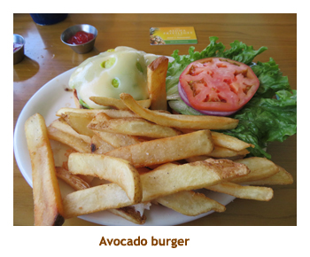

|
Home
Travel
Cruises
Past Cruises (Diaries)
Future Cruises
Rogues Galleries
Land Trips
Diaries (Land Trips)
Hawai'i
- Big Island - 04'01
Hawai'i
- Maui - 05'02
Hawai'i
- Big Island - 04'03
Hawai'i
- Kaua'i - 09'04
Hawai'i
- Big Island - 04'06
Hawai'i
- Maui - 04'06
Mainland China
- 05'07
Phoenix, Arizona
- 12'07
Greek Isles
- 05'08
Hawai'i
- Kaua'i - 09'08
Hawai'i
- Big Island - 09'09
Hawai'i
- Maui - 05'12
Hawai'i
- Big Island - 04'13
Ireland
- 08'13
Mexico
- Cancun 11'13
France/Belgium/Lux 07'15
Hawai'i
- Big Island - 05'17
England
/ Wales - 06'17
Hawai'i
- Big Island - 09'19
Photography
Cameras
Underwater
Pets
Tara
Blackie
Whitey
Muffy
Ollie
Rusty
Fluffy
Rufus&Dufus
Games
Rowing
Physics
|
|
Marjorie had booked us on a 10 day
Hawai'i
to Vancouver cruise for May, and we decided that we would precede the
cruise with a week on the Big Island. We booked for a week at the Kona Coast
Resort, the resort where the kids and I stayed in 2009. The single bedroom
unit we booked turned out to be really nice and we really enjoyed our week
in the sun.
This was definitely a snorkeling vacation (at least the land portion of the trip), so I have
included a number of our photos on a separate
Fish Pictures page.
Day 1, 2 (Apr 30 - May 1) - Traveling to Kona
We left the house about 2:30 PM and drove to Christina and Matt's. We picked up
Christina and drove on to the airport. There we turned the car over to Christina who took
it back to their place. Marjorie and I did the check-in, security and customs thingy and then
settled at the departure gate. The plane was predicted to be a bit late, so I had time for
a box of sushi. The flight was about 6.5 hours and we landed in Kahului (Maui) at 9:00 PM.
We caught a cab to the Maui Beach Hotel for our overnight stay. The next morning we
did a bit of snack shopping (for breakfast) and wandered the beach area in front of
the hotel. We caught an early hotel shuttle and got to the airport by 9:00 AM. Our
Hawaiian Airlines flight to
Kona left just after 11:00 and we were there in 45 minutes. The aircraft was a B-717
(seating 2 and 3 across) which I had never heard of. Turns out it is a renamed MD-80.
We picked up our rental car
(a Buick Verano) and drove to Costco for lunch and groceries. We checked into the
condo about 2:00. Then it was up to the KTA store for more groceries followed by a
sandwich dinner at the condo. (We had to get some of our favorite Punalu'u colored
bread - sweet buns and a sandwich loaf.) We were ready for bed early as Calgary
time was 4 hours later than Hawai'i.
Day 3 (May 2) - First day in Kona
The Kona Coast Resort is a huge complex
consisting of 28 separate buildings, each containing 2 to 20 or so condos.
Our condo was a single bedroom unit with delightful air conditioning. By fluke, we were right next door to
the 3 bedroom unit that we had rented with the kids on a previous trip. The resort complex is at the south end
of Ali'i Drive, far away from the hustle and bustle of downtown Kailua-Kona. (Well, it was the end of the road
before they recently extended it through to Captain Cook.) The Keauhou Shopping Center was a
short walk away, and a longer walk (we drove!) in the opposite direction took us to Kahalu'u Beach Park, our
favorite snorkeling beach. What could be more convenient! We did a morning snorkel and were rewarded with
lots of fish. Afterwards we changed, then headed into town. We parked at the farmer's market and walked to
Palani Road for lunch at Splashers Grill. Their avocado burgers are huge but delicious. Back at the farmer's
market we bought a huge avocado for sandwiches. We returned to the condo mid-afternoon for a dip in the
pool and a good read. At dinner time we headed to the club house for free Monday night pupus, then had
dinner at the condo. What a wonderful day.
|
|
 |
|
 |
 |
Day 4 (May 3) - Second day in Kona
We woke up early, still getting used to the time difference. We had our usual breakfast and then headed
down to Kahalu'u Beach Park for a morning snorkel. The early snorkel (8:00 AM or so) had benefits of
calmer waters, lots of parking, no crowds and cooler temperatures. When Christina and Matt were here in
February, the beach was closed due to a sewer pipe breakage. Now it was all repaired with no visible
trace of the repair work. The seawater had been quite contaminated, but all was OK now and the fish were
back. We enjoyed our snorkel and some loafing time, and then packed up to go back to the condo for lunch.
After lunch we headed to Wal-Mart where Marjorie bought herself a sun hat. Then we drove into town looking
for the One Aloha shave ice outlet that C&M had recommended. We found it and both had a snow cone. It
was very good, but not quite as good as our favorite - Ululani's on Maui. We went back to the condo for a
swim in the pool and some intense reading in the comfy lounge chairs. Tonight we had our own dinner in
the condo. Another great day.
Day 5 (May 4) - Diversion to the Kohala coast
Today we decided to be different and snorkel up the Kohala coast at the Fairmont Orchid (Pauoa Bay).
We had our usual breakfast, loaded up the car and headed north. We noticed that there was no trace of
the white coral grafitti along the black lava fields. (I checked on the Web later and an ecological group
of volunteers cleaned it all up in 2012 to 2013.) We parked at Holoholokai Beach and hiked over the
black and white landscape to the Fairmont hotel. Pauoa Bay was OK snorkling, but we enjoyed it.
Afterwards we used the hotel pool and lounged in their comfy chairs. Driving back to Kona, we stopped
for lunch at the Kona Brewing Co. We shared a Greek pizza that was delicious. To wash it down I had the
Vanilla Thrilla stout. Matt had told me about this beer and he was right - it was wonderful.
Great lunch. Back at the condo we did our usual afternoon dip in the pool followed
by a read in the lounge chairs. We had sandwiches in the condo for dinner.
Day 6 (May 5) - Back to Kahalu'u Beach Park.
We were up early and breakfasted in the condo. Today we would return to our favorite snorkel spot -
Kahalu'u Beach Park. Coming to the beach early meant our choice of shady parking spots and a
nice shady picnic table. Everyday there was a cruiseship anchored visible from the beach. We noticed
that a tourist shuttle was stopping at the beach dropping off and picking up cruise ship passengers. This
would be ideal for us once on the cruise ship and having a port day in Kona. It was reasonable at $15 pp
and the three or four buses provided an every twenty minute service. We had another great snorkel and
took lots of photos. For lunch we decided to try Sam Choy's in the Keauhou Shopping Mall. It was quite
poor and neither of us enjoyed our meal. Strike Sammy off the list!! We had used up our avocado so
headed back to the farmer's market to get another one and a papaya. Yum! We finished the day back at
the resort with a dip in the pool and a read. As usual, we had dinner at the condo and went for a walk
afterwards.
Day 7 (May 6) - Final day in Kona
 Today was our final full day in Kona - tomorrow we would be leaving for Honolulu and the cruise.
After our usual breakfast we headed down to KBP for a final snorkel. Of course it wasn't really our
final time as we would be here again in a week on the cruise. It was really pleasant right after our
snorkel as we would shower, dry off and sit at the picnic table reading or just people watching.
Today we decided to head into town and have lunch at the He'e Japanese restaurant. Several
people had recommended it and apparently the chef used to work at Teshima's, a favorite of
ours. I had a tempura plate, but the batter was not as light as I like it. Still, it was pretty good. We
did a bit of a drive through town and along Ali'i drive, arriving back at the condo so we could
start packing. We did our usual swim and relax at the pool. Then we had dinner at the condo and
finished our packing.
Today was our final full day in Kona - tomorrow we would be leaving for Honolulu and the cruise.
After our usual breakfast we headed down to KBP for a final snorkel. Of course it wasn't really our
final time as we would be here again in a week on the cruise. It was really pleasant right after our
snorkel as we would shower, dry off and sit at the picnic table reading or just people watching.
Today we decided to head into town and have lunch at the He'e Japanese restaurant. Several
people had recommended it and apparently the chef used to work at Teshima's, a favorite of
ours. I had a tempura plate, but the batter was not as light as I like it. Still, it was pretty good. We
did a bit of a drive through town and along Ali'i drive, arriving back at the condo so we could
start packing. We did our usual swim and relax at the pool. Then we had dinner at the condo and
finished our packing.
Day 8 (May 7) - Leaving Kona for Honolulu
All good things must end, but we had had a lovely time in Kona. The condo
was great, the weather was great, the snorkeling was great, we ate too much
... However it was time to get on with the next adventure. Our breakfast included
all the remains of our grocery shopping forays and wasn't a meal I would recommend
for daily consumption. I think the only thing that we took with us was a huge
lump of cheddar cheese. The rest we either finished or donated to the following
guests. We loaded up the car and left about 8:30 AM to drop off the rental car
and shuttle to the airport. Our flight to Honolulu was due to leave about
1:00 or so from whence we would eventually check into the cruise ship and
meet up with Dave and Joan. D&J had spent the preceding 10 days on Oahu, so
we could swap Hawai'i stories on the ship. To continue the story of our Hawai'i
trip, please select Hawai'i
Cruise Diary. Here endith part 1.
|